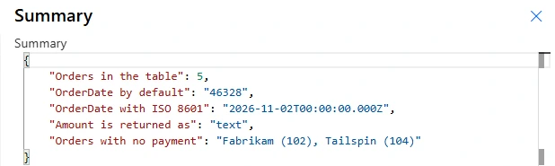

- Power Automate
- Level 7 · Files, email and documents · 4 of 7
Excel processing patterns
Once you can read a table, most Excel work falls into a few patterns. This page covers the three that come up most: comparing two files, handling a workbook that arrives as an attachment, and producing an Excel file for people to download.
Matching rows between two files
The demo has an Orders workbook and a separate Payments workbook. The question: which orders have no payment?

- List rows from both tables.
- Select just the payment order IDs:
item()?['OrderId']. This gives a simple list such as ["101", "103", "105"]. - Filter array the orders, keeping those whose ID isn't in that list:
not(contains(body('Paid_order_IDs'), item()?['OrderId']))| Piece | What it does |
|---|---|
body('Paid_order_IDs') | The list of paid order IDs from Select. |
contains(..., item()?['OrderId']) | True when this order's ID is in the list. |
not(...) | Keeps only the orders that are not in it. |
No loop and no nested loop: three actions however many rows there are. For bigger lookups that return a value (such as a customer name), use the lookup object from Avoiding nested loops.
Excel files that arrive by email
The Excel connector can only read files stored in SharePoint or OneDrive, and only data inside a table. So an attached workbook takes three steps:
- Save the attachment to a library with SharePoint Create file (see Email attachments and file content).
- If the sender's file has no table, add one with Create table, giving the range (for example
A1:D50). - List the rows. The file box accepts the new file's path, such as
/Incoming/orders-20261122.xlsx, so it can change on every run.
Add a short Delay (a minute or two) between saving and reading if you get "file not found" or locked errors; the file may still be finishing in the background.
Exporting data to Excel
| Approach | How | Best for |
|---|---|---|
| CSV file | Create CSV table, then Create file with a .csv name | Quick downloads; Excel opens it directly |
| Template workbook | Copy a template .xlsx that already has an empty table, then Add a row into a table for each record | Formatted reports with headers, colours and formulas |
| Office Script | Run script writes many rows in one call | Hundreds of rows, where one action per row is too slow |
New to this? Start from the basics optional
contains() on an array checks whether a value is in the list. On text it checks for a piece of text.
Template workbook: a prepared file you copy for each report, so the flow only fills in data.
Common mistakes
- Matching numbers against text. Excel returns "101" as text; make both sides the same type.
- Reading an attachment straight from the email with the Excel connector. It must be saved first.
- Adding thousands of rows one by one. Use a CSV, an Office Script, or a list instead.